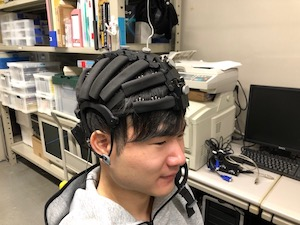
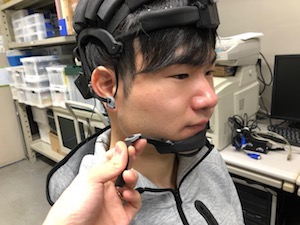
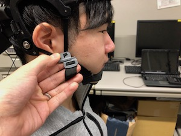
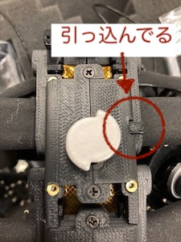
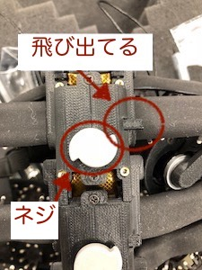
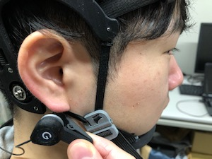

2. HD-72とデータ取得ソフトウェアの接続
HD-72を始めとするCognionics製品は、Cognionics Data Acquisition.exeというソフトで制御します。
ソフトは
ここ
からダウンロードできます。
ソフトを開くと、右側のメニューに装置名が表示されます。
クリックして[Connection]を選び、少し待ちます。
[Attempt to Auto-Configure?]のメッセージに[はい]と答えます。
少し（5秒くらい？）時間がかかりますが、デバイス設定画面が出てきます。
Sample Rateはここで変えましょう。
ただし、サポートされているRateは500までだそうです（代理店営業の方曰く）
1000Hzで起動させたところ、謎のスパイクノイズと謎のトリガが入るバグが生じました。
一覧表示された電極名をクリックすると、その電極の測定のオン・オフを切り替えられます。
[Write to Device and Start]をクリックします。
画面左側にグラフが表示されればOKです。

こんな感じに。
今はまだ脳波計をつけてないので、その辺の電波を拾っているだけです。
2. HD-72の装着
ざっくりかぶせます。

あらかじめCz（あるいは重要な電極）の位置を測っておいて、そこに合わせるのがいいかと思います。
が、いずれにせよ装着位置はざっくりになってしまいそうです。
左右くらいはまっすぐになるように調整しましょう。
あご紐を締めます。
 留め具部分は、スライドして噛ませるようになっています。
ベルトを締めていきます。
 
各ネジの横についているボタンが飛び出ている状態であることを確認します。
ボタンが引っ込んでいる状態の場合は、飛び出た状態にします。
ネジを下にスライドさせるか、時計方向に回すとボタンが飛び出ます。
この状態で、ネジを時計回りに巻きます。
これによってベルトが巻き取られ、締められていきます。
全体を均等に締めて、すべての電極が頭皮に接触するようにしましょう。
ちなみに手元にあるこのHD-72は、何故か一部のボタンが固いようです。
結構ガチャガチャとネジを動かしてようやくボタンが出てきます。
グラウンドとリファレンスを左右の耳たぶにクリップでつければ完成です。

電極が刺さるような感じもなく、それほどは重くもなく、意外に装着ストレスは少ないです（個人の感想）。
3. データ取得ソフトウェアを使用する
きちんと装着ができると、データ取得ソフトに脳波が表示されます。

Displayタブにある[Record]を押すと、その時からの脳波を記録することができます（上記画像はDeviceタブ）。
簡易に測定をするならこれで十分でしょう。
[Start LabStreamingLayer]をクリックすると、別のPCに脳波のデータを送ることができます。
これが結構便利なのです。
メニューのうち[Display]タブからは、脳波の表示設定を変えることができます。
初期設定だと64本の波形が1ページに表示されていてわかりにくいです。
[Channel: All/pages]となっているのをクリックして、[8/pages]あたりに設定しましょう。
また、縦軸のスケールを示す[Scale(EEG):]も200μVくらいにするのがわかりやすいかと思います。
Mask Hi-Z ChannelsのThresholdを超える電気抵抗の電極波形は表示されません。
[Channels]タブから、各電極の電気抵抗を確認することができます。
右下の三角マークをクリックすると別ウィンドウに拡大することもできます。
4. 測定の精度を高める
ソフトウェアで脳波や電気抵抗を確認しながら電極の接触具合を調整します。
まず、[Display]タブから電気抵抗値を確認しましょう。
右下の三角形をクリックすると、拡大表示も可能です


赤く表示されている電極は電気抵抗が高く、緑は低いことを示しています。
レッドになっている電極の接触を再確認しましょう。
髪の毛を耳かきのような棒でかき出したり、ベルトをより強く締めたり、電極をグリグリしたりします。
すべてグリーンになれば最良です。
しかし、必ずしもそうする必要はないとのことです（営業さん曰く）。
最終的には、脳波形を目視してイケるかどうか確認してほしいとのことです（営業さん曰く）。


線が太く見える（左）のは、部屋の電源から発生する50Hz（関西だと60Hz）のハムノイズが乗っているためです。
太線だったり、線が上下に飛び跳ねている電極は調整しましょう。
さらに、下記3点を確認してみましょう。
・まばたきをすると、スパイク状のアーティファクトが入る
・食いしばりをすると、ノイズが入る（線が極太になる）
・目を閉じると、α波が出現する。
α波とは、脳波のうち大体8-13Hzの、ゆったりとした周波成分を指します。
リラックスすると出現する脳波として有名で、目を閉じると、特に後頭に見られます。
脳波のギザギザが、なんというか、ゆるやかになればそれがα波だそうです。
目を開けている時と閉じている時とで、ギザギザの間隔が変わらないか見てみましょう。
ただこのα波は、はっきり現れる人と現れないい人がいるそうです。
これは、かなりはっきりと出るらしい人のα波です。
目を閉じてる区間の脳波が、開いている時の区間のものと違うことがなんとなくわかります。
4. HD-72を取り外す
測定が終わったら脳波計を外しましょう。
耳たぶに挟んだクリップを外し、顎ひもを外し、脳波計を上に持ち上げればそれで外れます。
次の測定のために、巻き取ったベルトを緩めておきましょう。
先程ベルトを締めるために使ったネジを上へスライドさせ、ボタンを押します。
すると、ボタンが引っ込んだ状態になるので、これで緩めることができます。
緩める時には、（なんと）手でベルトを引っ張り出します。
ちょっとドキドキするほど強めに引っ張ります。
すると、カラカラと音を出しながら巻き取られたベルトが戻ります。
注意点として、ネジと反対側の、ベルトが付着している部分に力がかからないようにしましょう。
引っこ抜けてしまうことがあるようです。
やらかした
（代理店の方がさっと直してくださいました）
以上、HD-72を使うための基礎知識でした。
別の記事に、MATLABやOpenVibeというソフトでデータ取得を制御する記事を書いています。
そちらもどうぞ。